英姿飒爽的捷豹
在马背上体验英伦文化，亲身体验策马奔腾与开着捷豹XF风驰电掣相同的快感。
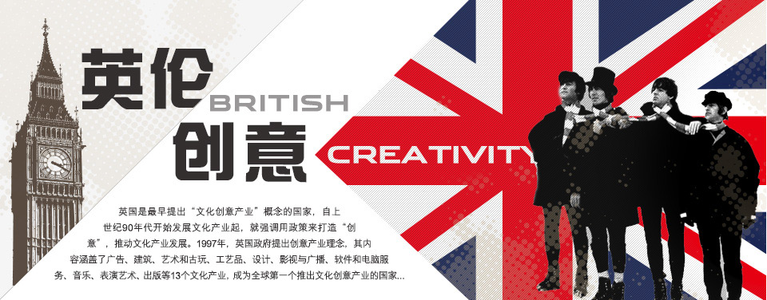
- 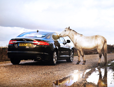
- 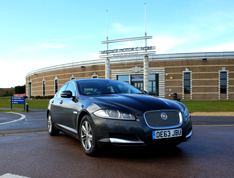
Heritage Motor Centre
传统汽车中心不仅仅是一个汽车博物馆，拥有近300辆复古，经典车型。以独特的多元化方式展示了来自英国驾驶历史上最具代表性的汽车。
- 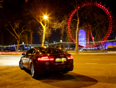
伦敦最吸引的观光点“伦敦眼”
它实在是个疯狂的城市创举。就像捷豹XF，将跑车的运动风格与充满创意的设计完美融合。
- 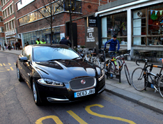
伦敦的运动时尚文化
伦敦这座城市走进骑车探索的时尚行列的同时，每一辆新款捷豹XF也散发着与众不同，鲜明的运动风格。
-
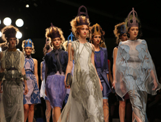
英国时装周活动
做为一个时尚人士，KOL当然不会错过一年一度的英国时装周。驾驶着喜爱的XF轿跑，穿行于伦敦街头，满眼都充斥着活力与创意。
- 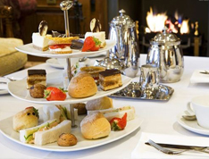
伦敦设计酒店品英式下午茶
英式下午茶是英国人创造的一种经典饮食文化，它与捷豹八十余载的品牌旅程非常吻合。这二者绝对都是历代名流雅士的宠儿。
- 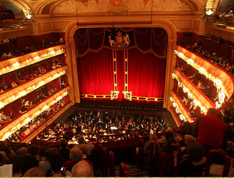
英国皇家歌院剧
被法国大作曲家德彪西曾称之为能代表英国人最优秀的一面，装修富丽堂皇，音效尽善尽美。在这里看次歌剧绝对是很特殊的经历。
-
收集世界珍邮
集邮是英国绅士的一大文雅爱好。在位于伦敦史翠德街的吉本斯邮票门店，不仅可以挑选五花八门的海量邮票，还能见识到许多珍贵邮品。
- 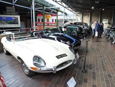
汉普郡国家汽车博物馆
英国汽车设计艺术的杰出代表，更是英伦精神的缩影，观众可以深入了解捷豹品牌的精髓、演变和传承。
- 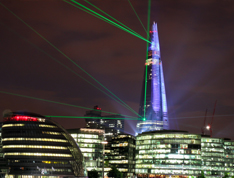
碎片大厦
又称夏德塔。是位于英国伦敦的伦敦桥站西南侧的摩天大楼，高309.6米，为欧盟最高建筑物，欧洲第二高建筑物，伦敦天际线上的新宠儿。
- 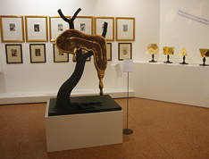
达利作品纪念馆
最具超现实主义风格，里面的艺术氛围给人一种迷幻般梦境感受。展品极具创新精神，常年展出萨尔瓦多•达利令人讶异的作品。
- 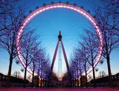
伦敦眼摩天轮
伦敦眼于2000年第一次对公众开放，雄踞世界上最大的观光摩天轮。全世界的城市都在复制伦敦这个未来派的巨大轮子，但它终究是原创。
- 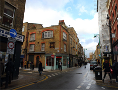
红砖市场
不是一个普通的市集，而是充满活力与城市后现代风格的潮流集散地，年轻音乐人、创作艺术随处可见。
-
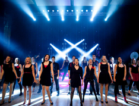
西区看场音乐剧
如果觉得古典芭蕾太阳春白雪，原版歌剧又太曲高和寡，那就选择在伦敦西区看一场老少咸宜的音乐剧吧。
- 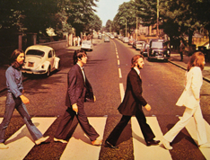
披头士乐队
是一支成立于1960年的英国利物浦摇滚乐队，乐队在流行音乐中取得了巨大成功。是20世纪60年代的文化标志之一。
- 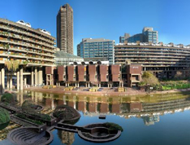
巴比肯中心
在巴比肯中心观看艺术表演会是一次难忘的经历，但开着捷豹XF的时候，它出色的环绕音响系统，让你享受到与音乐厅如出一辙的非凡听觉体验。